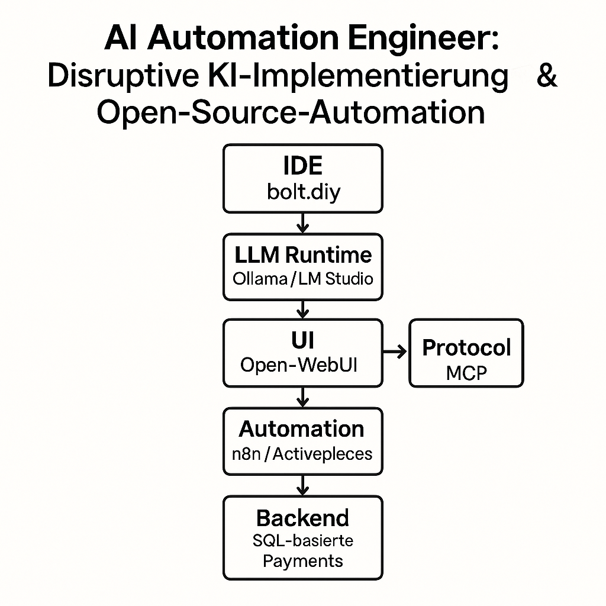
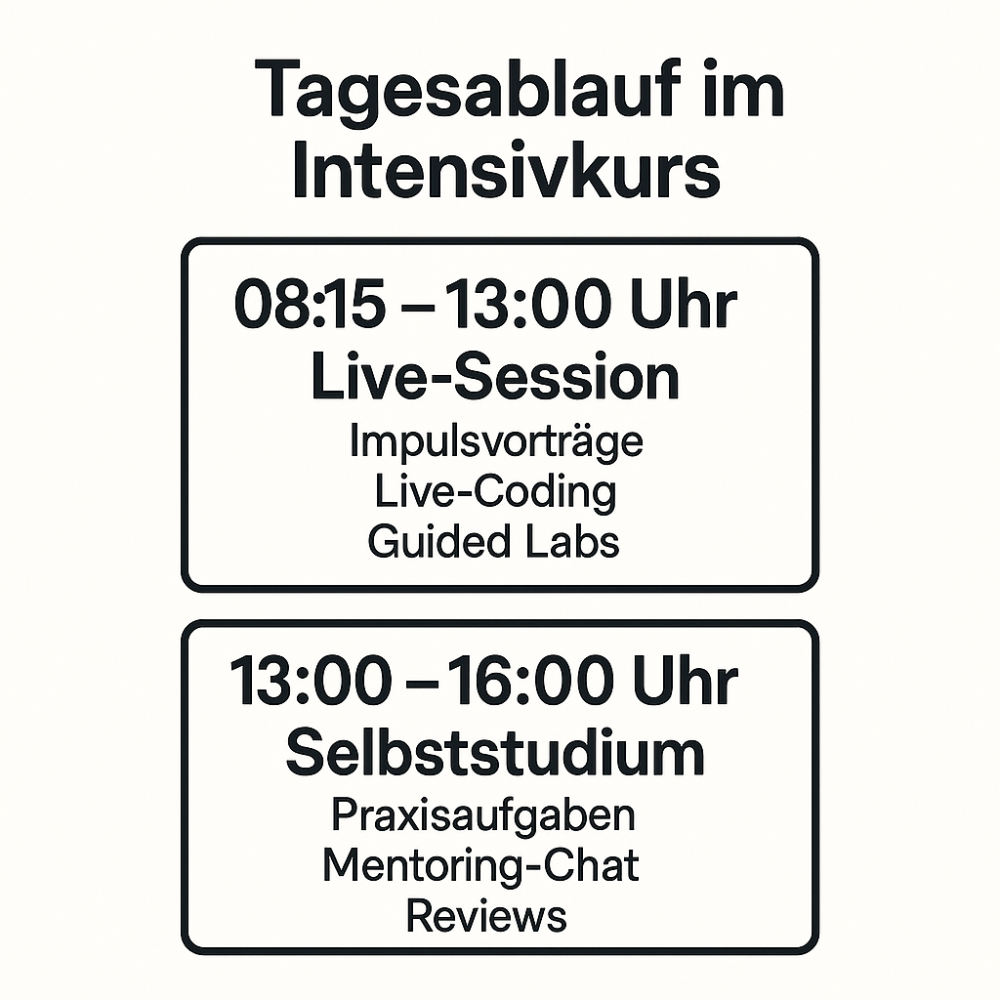

Intensivkurs für erfahrene Fach- und Führungskräfte
Der zweiwöchige Intensivkurs „Disruptive KI-Implementierung & Open-Source-Automation" (100 UE) richtet sich an erfahrene Fach- und Führungskräfte. Er kombiniert Live-Unterricht von 08:15 bis 13:00 Uhr mit betreutem Selbststudium von 13:00 bis 16:00 Uhr. Die Teilnehmenden bauen eine vollständig lokale Entwicklungs- und Produktionspipeline auf Basis von bolt.diy, Ollama/LM Studio + Open-WebUI, einem eigens erstellten MCP-Server, n8n / Activepieces sowie Supabase + Stripe – sämtlich datenschutz- und EU-AI-Act-konform.


| Kompetenzfeld |
Lernziel |
| LLM-Ops |
Lokale Modelle sicher deployen und fein-tunen (Ollama / LM Studio + Open-WebUI) |
| MCP-Agentik |
Agenten und Tool-Bridges über einen eigenen MCP-Server entwickeln |
| Dev-Plattform |
Kostenlose IDE-Umgebung mit bolt.diy aufsetzen |
| Workflow-Automation |
Self-hosted Workflows mit n8n und Activepieces gestalten |
| App-Back-End |
Supabase-Datenbank und Stripe FDW in KI-Apps integrieren |
| Governance & Recht |
DPIA, GDPR und EU-AI-Act risikobasiert umsetzen |
AZAV-Kriterien (§ 180 SGB III)
| AZAV-Kriterium |
Umsetzung |
| Maßnahmeziel |
Berufsqualifikation „AI Automation Engineer" |
| Stundenumfang |
80 UE Präsenz + 20 UE Projektarbeit |
| Lernerfolgskontrolle |
Praktisches Projekt + schriftlicher Test |
| Wirtschaftlichkeit |
Ausschließlicher Einsatz frei verfügbarer Open-Source-Tools |
| Qualitätssicherung |
Peer-Reviews, Version-Control, Feedback-Schleifen |
Die Maßnahme erfüllt damit die Anforderungen der Bundesagentur für Arbeit an AZAV-zugelassene Weiterbildungen.
Tagesablauf
| Zeit |
Form |
Lernaktivität |
| 08:15 – 13:00 |
Live-Session |
Impulsvortrag, Live-Coding, Guided Lab |
| 13:00 – 16:00 |
Selbststudium |
Praxisaufgaben, Mentoring-Chat, Review |
Eingesetzte Tools
| Kategorie |
Tool |
Lizenz |
Nutzen |
| IDE |
bolt.diy |
MIT |
Browser-basierte Multi-LLM-IDE |
| LLM Runtime |
Ollama / LM Studio |
MIT |
Offline-Inference |
| UI |
Open-WebUI |
AGPL-3.0 |
Lokale Chat-Oberfläche |
| Protocol |
MCP |
Apache-2.0 |
Standardisierte KI-Schnittstelle |
| Automation |
n8n / Activepieces |
AGPL-3.0 / Apache-2.0 |
Self-hosted Workflows |
| Backend |
Supabase + Stripe FDW |
Apache-2.0 |
SQL-basierte Payments |
Der Kurs bietet eine durchgängige, EU-konforme KI-Pipeline: von der kostenlosen Entwicklungsumgebung über lokale LLM-Services und einen eigenen MCP-Server bis hin zu automatisierten Workflows und produktionsreifen Back-Ends. Damit qualifizieren sich die Teilnehmenden zielgerichtet für das Berufsprofil AI Automation Engineer und erfüllen alle Voraussetzungen für eine AZAV-geförderte Weiterbildung.